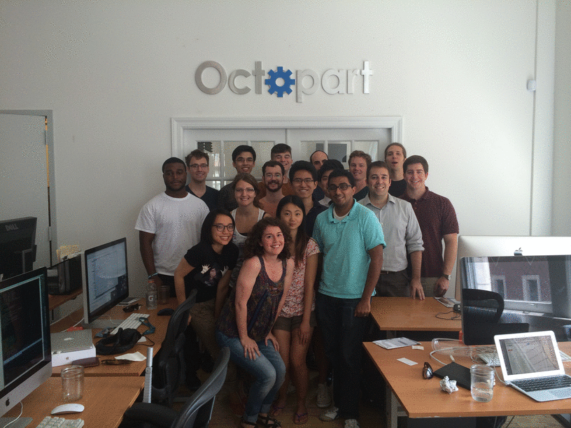

Eric Lam

-
Resources
Summer Days
It has been a great summer working at Octopart over the summer. Whether it be working to improve our data-collection framework or to kill numerous flies in the office, I definitely felt like part of the company. Part of the team. Part of a family.
And I definitely had a blast. The people at Octopart are definitely a large part of the experience. I loved everyone.

Of course, I'm going to miss Octopart, but not too much, because I'm going to aid in amassing a Data Army for Octopart (to collect data for us and to give us the most comprehensive coverage on part data around). We'll see how it goes, but I am hoping for the best.
Thanks again, Octopart, for having me around for another summer. I'm so glad that I could be part of the family. I'll keep in touch. See you soon, Octopart.
{kind=link}
First Day Of Work (Again) at Octopart
After many months, I have finally returned to Octopart! Seated in the Flatiron District of New York City, the company hosts an electronics part search engine.
I am glad to be back on board with the team for the summer.
Pre-Work Quiet
It's quiet, everyone's in bed, and it isn't even midnight yet... is something wrong?
Freshman Year at RPI Finished
Two semesters, nine months, ten classes, 37 credits, and thousands of dollars later, my Freshman year at RPI has finised!
Whether it be going through classes like the mind-numbing Bio, the rigorous Data Structures, or the wonderful Minds and Machines and Introduction to Cognitive Science, I have learned quite a bit.
Also, to supplement my academic time, I have made a great number of wonderous friends, some from here and there and others from the wonderful Ballroom Club and Team. Increasing my dancing skills tenfold, I have been immersed in the of Ballroom Dance.
And so it is with a heavy heart that Freshman year is over. Not only will I have to spend several months away from the friends that I have grown to love, but some will be leaving the school for things beyond. I wish them the best!
Onwards to another great year at my favorite school!
First Blog Entry!
The blog has finally been posted!